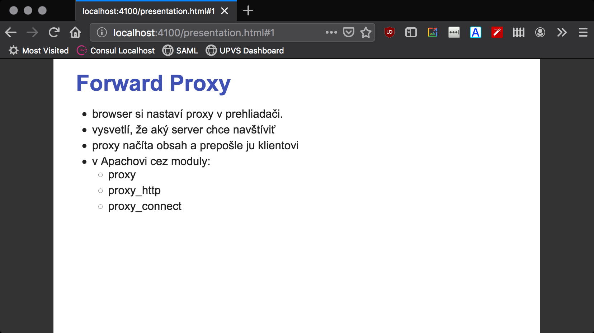

Patláme slajdy
Treba rýchlo slajdy? PowerPoint je neohrabaný? Beamer je zložitý? A prečo vlastne nepíšeme slajdy v jednoduchom Markdowne? A prečo ich nezobrazujeme v bežnom webovom prehliadači?
Budeme potrebovať:
- editor pre Markdown, napríklad
notepad remark.js, knižnicu pre web, ktorá vyrenderuje Markdown ako HTML, a to priamo v prehliadačibackslide, knižnicu pre príkazový riadok,
Zdrojový kód
Ukážkové slajdy v Markdowne vyzerá napríklad nasledovne:
title: httpd a Tomcat – loadbalancing a ladenie výkonu
class: animation-fade
layout: true
---
# Forward Proxy
- browser si nastaví proxy v prehliadači.
- vysvetlí, že aký server chce navštíviť
- proxy načíta obsah a prepošle ju klientovi
- v Apachovi cez moduly:
- proxy
- proxy_http
- proxy_connect
---
# reverse proxy (gateway)
- klient nakontaktuje server
- ten je v skutočnosti reverse proxy
- server/reverse-proxy nakontaktuje aplikačné servery
- získa obsah
- schrústa
- pošle klientovi- YAML Front Matter: súbor je uvedený YAML preambulou s metadátami, napr. názvom prezentácie (title) a štýlom (class).
- Slajdy sú oddelené vodorovnou čiarou.
- Nadpisy slajdov zodpovedajú nadpisom prvej úrovne (
#) - Markdown funguje ako v bežných súboroch, odrážky odrážame obvyklým spôsobom.
Prevod Markdownu na HTML cez Remark
Knižnica remark dokáže priamo v prehliadači prevádzať markdownový zdroják na HTML. Teda, vytvorí sa jeden HTML súbor obsahujúci knižnicu remark a trochu boilerplatu. Do súboru sa zároveň vrazí markdownovský zdroják, a prehliadač v kombinácii s touto knižnicou automaticky prevedie markdownovské slajdy na nádherné HTML.
HTML súbor nie je ktoviečo. Veď pozrime si ukážku.
To je dôvod, prečo vznikol backslide.
Alebo lepší prevod cez backslide
Backslide je nástroj pre príkazový riadok implementovaný v JavaScripte/Node.js. Ponúka:
- rýdze a nádherné markdownovské súbory bez HTML boilerplatu
- automatické stiahnutie remark.js
- automatické obnovovanie prezentácie v prehliadači pri zmene zdrojáku
- export do PDF
Inštalácia backslide
Node.js je nutnosťou, takže je nutné ho nainštalovať.
Okrem toho inštalujme samotný nástroj:
npm install -g backslide
V ceste sa objaví príkaz bs.
Inicializácia prezentácie
Novú prezentáciu založme cez
bs init
Zjaví sa:
- zdroják
presentation.mds ukážkovými slajdami - adresár
templateso šablónou a knižnicou.
Export do HTML
Export do HTML je jednoduchý:
bs export
Vznikne adresár dist, kde sa objaví krásna prezentácia, ktorú si môžeme otvoriť v prehliadači alebo uložiť na disketu.

Klávesové skratky
V prezentácii fungujú šípky doľava a doprava, na mobile funguje swipeovanie prstom
Zabudovaný HTTP server
bs ponúka zabudovaný server s automatický reloadovaním prezentácie v prehliadači!
bs serve
Príkaz spraví:
- export markdownu do HTML
- naštartuje HTTP server na porte 4100
- otvorí webový prehliadač s výsledkom.
Export do PDF
Slajdy možno exportovať do PDF:
bs pdf
Backslide použije interný prevod cez Chromium a HTML zapíše do PDF. Nie je to dokonalé, ale účel to splní.
Tipy, triky a štýly
Štýly
Štýly sa riadia súborom template/style.scss, ktorý je vo formáte https://sass-lang.com/. Prepisovaním súboru môžeme meniť:
- farby
- fonty: rodinu a jej veľkosti
Nastavenia slajdov
Úvodný slajd
Úvodný slajd prezentácie má zabudovaný štýl impact:
class: impact
# O myši a sove
Použitia premenných
Premenné zo slajdov sú k dispozícii v moustachovskej syntaxi:
# {{title}}
V tomto prípade nájde atribút title nastavený v slajdoch a použije ho v nadpise.
Vlastné spany
V prezentácii môžeme používať vlastné span-y so štýlmi. Na to je extra syntax:
.bottom-bar[Krásna prezentácia]
Vytvorí sa span s CSS triedou bottom-bar a keďže tento štýl je automaticky k dispozícii, máme rovno spodok slajdu s pekným textom!
Slajd-šablóna
Každý slajd môže slúžiť ako šablóna pre ostatné slajdy.
Stačí dodať atribút layout: true ako atribút.
class: animation-fade
layout: true
.bottom-bar[
{{title}}
]
Všetky nasledovné slajdy:
- budú mať animované prechody
- na spodku (v sekcii
bottom-bar) budú uvádzať obsah premennejtitle.
Sumár vlastností slajdov
Dokumentácia k remarku uvádza zoznam vlastností slajdu.